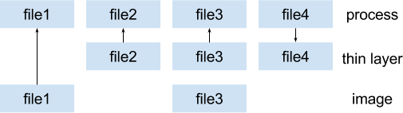
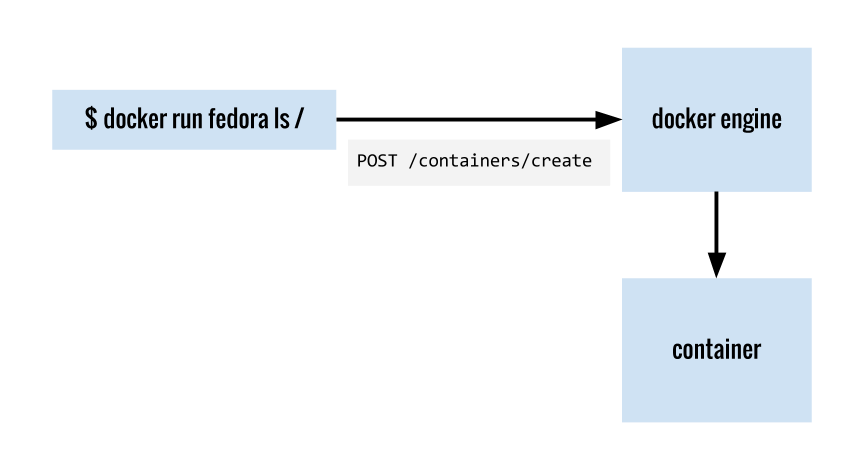
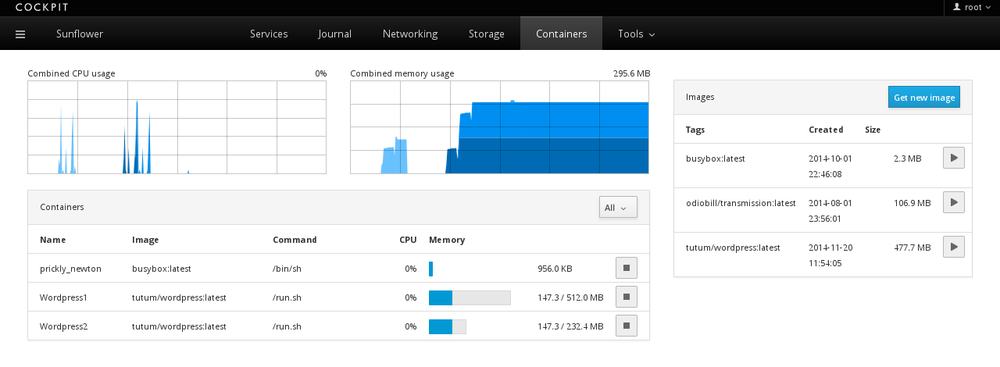
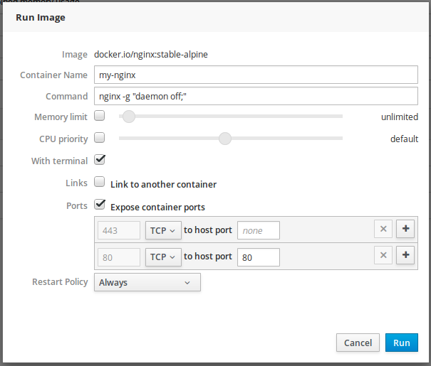
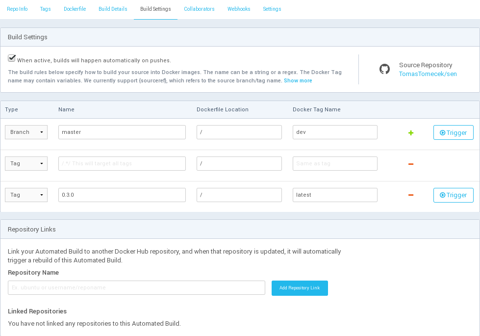
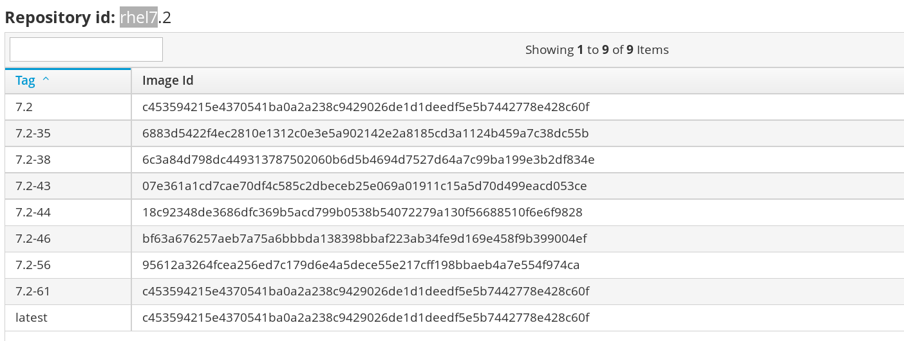

- Introduction, history, underlying technologies
- Running containers, atomic, docker compose, ansible
- Docker images, layers, creating images, registry
- Docker for developers, packaging applications
- Administrating and debugging docker
Linux Containers
Tomáš Tomeček (Developer Experience)
Peter Schiffer (AtomicOpenshift)
Josef Karásek (xPaaS)
About this Course
-
Docker for Workstation
- Running and building containers on a single host
- Managing Docker engine
- Bit of theory, history, future and alternatives
-
Prerequisites
- Linux knowledge ~ RHCSA
- Notebook during the course is optional
- Slides - github.com/josefkarasek/docker101
Table of content
Session 1
Introduction to Linux containers
What is a container?
What is a container?
actually, there is no container
but there are constrained applications*
*application = 1 or more running processes
When we talk about containers
we talk about multiple Linux kernel features
configured together for set of processes
History
- 1992 - "The Use of Name Spaces in Plan 9"
- 2000 - FreeBSD jail
- 2005 - OpenVZ
- 2007 - cgroups & Kernel namespaces
- 2008 - LXC
- 2011 - OpenShift
- 2013 - Docker
- 2014 - Kubernetes
rhelblog.redhat.com/2015/08/28/the-history-of-containers
youtu.be/wW9CAH9nSLs - first announcement of Docker [5min]
Underlying kernel features
- namespaces
- limit what a process can see (pid, net, user, ...)
- cgroups
- limit how much a process can use (cpu, mem, i/o)
- copy-on-write
- instant start, tracking changes (overlayfs, ...)
- POSIX capabilities
- managing root permissions
- SELinux
- let containers contain
- seccomp
- syscall filtering
Namespaces
PID namespacing

also mnt, net, ipc, uts, user
cgroups
- cpu share
- cpuset
-
memory allocation
- soft vs. hard limits
- I/O
- devices cgroup
- freezer cgroup
- accounting
copy-on-write
- Instead of copying whole file system
- Storage keeps track of changes
- BTRFS, ZFS, device mapper, overlayfs, aufs

POSIX capabilities
- More granular permission checks than the traditional PRIVILEGED vs UNPRIVILEGED user
- Containers runnig as
UID 0less harmfull - For more info check man page:
man capabilities
$ getcap /usr/bin/ping
/usr/bin/ping = cap_net_admin,cap_net_raw+ep
SELinux
- Enforcing container separation
- Labeling system
- Multi level security
Secure Computing
syscall filtering
- SECCOMP_SET_MODE_STRICT - only read, write, exit and sigreturn
- SECCOMP_SET_MODE_FILTER - whitelist only some syscalls
- Example: what about reboot?
- Some calls are privileged - gated by POSIX capabilities
What is a container good for?
- Application with all its dependencies
- Clean environment in fraction of a second
- Isolation mitigates binary interference - distribution and runnning multiple versions of programs
- Easy deployment - rolling updates, rollback to previous versions
Containers without Docker
Introduction to Docker
platform for running, shipping and building containers
Basics
- Docker image
- Image operations
- Containers operations
- Networking
- Volumes
docker engine architecture
Docker Image
An archive containing:
- Minimal OS for installing and running applications
- Application with all dependencies
Image is uniquely identified by:
- Image registry
- Author
- Image name
- Image tag (version)
registry.access.redhat.com/jboss-eap-6/eap64-openshift:1.2
Docker Image II

Image Operations
- pull
- Downloads and updates Docker images
- images
- Lists all Docker images on the host
- rmi
- Remove specified Docker image from the host
Container Operations
- create
- Creates stopped container from the image
- start
- Starts specified container
- run
pull,createandstartin one command- ps
- Lists containers available on the host
- rm
- Remove specified Docker container from the host
Networking

Volumes
Containers are ephemeral. Data persistence:
- Named volume
- Unnamed volume
- Bind mount
- Data-only containers
Demo — docker basics
Docker hub
- Big value of Docker Inc.
- (Free) repository with images
- Can also build images
- Quality varies
- Vulnerabilities
- Out of date content
- Example: hub.docker.com/r/pschiffe/docker101-fedora/builds/
Questions?
Thank you!
github.com/josefkarasek/docker101schiffer.typeform.com/to/lNHegp

Table of Content
Session 2
docker pull
Downloads and updates Docker images
$ sudo docker pull docker.io/fedora:latest
$ sudo docker pull registry.access.redhat.com/rhel
$ sudo docker pull docker.io/pschiffe/docker101-fedora
docker images
Lists all Docker images on the host
$ sudo docker images
REPOSITORY TAG IMAGE ID CREATED VIRTUAL SIZE
docker.io/fedora latest 9bdb5101 9 weeks ago 204.7 MB
dock../docker101-fedora latest 68f574f4 10 hours ago 217.9 MB
docker rmi
Remove Docker image from the host
$ sudo docker rmi -f fedora
docker create
Creates stopped container from the image
$ sudo docker create -i -t --name my-fedora fedora bash
3c314776542af5507fce81f3ee0a4318e06e617e58a250e4ddcf9b88736624a5
- -i, --interactive
- Interactive mode (keeps the STDIN open)
- -t, --tty
- Allocates a pseudo-TTY
- --name
- Name of the container. Good practice is to set one
- fedora
- Image to be instantiated
- bash
- Command to be run inside of the container
docker ps
Display containers
$ sudo docker ps
CONTAINER ID IMAGE COMMAND CREATED STATUS PORTS NAMES
$ sudo docker ps -a
CONTAINER ID IMAGE COMMAND CREATED STATUS NAMES
3c314776542a fedora "bash" 11 minutes ago Created my-fedora
- -a, --all
- Show all containers. Only running are shown by default
docker start
Starts created container
$ sudo docker start -a -i my-fedora
[root@3c314776542a /]#
- -a, --attach
- Attach to container's STDOUT and STDERR and forward all signals
- -i, --interactive
- Interactive mode (keeps the STDIN open)
- my-fedora
- Name of the container
docker rm
Removes container
$ sudo docker rm -f my-fedora
- -f, --force
- Removes container even if it's running
- my-fedora
- Name of the container
docker run
docker pull + docker create + docker start
$ sudo docker run -it --rm --name my-fedora pschiffe/docker101-fedora bash
[root@35e75c60305c /]#
- -it
- Interactive mode
- --rm
- Removes container when it stops
- --name
- Name of the container. Good practice is to set one
- pschiffe/docker101-fedora
- Image to be instantiated
- bash
- Application to be run inside of the container
Let's look around
In the container:
[root@35e75c60305c /]# ip a
1: lo: <LOOPBACK,UP,LOWER_UP> mtu 65536 qdisc noqueue state UNKNOWN group default qlen 1
link/loopback 00:00:00:00:00:00 brd 00:00:00:00:00:00
inet 127.0.0.1/8 scope host lo
valid_lft forever preferred_lft forever
inet6 ::1/128 scope host
valid_lft forever preferred_lft forever
24: eth0@if25: <BROADCAST,MULTICAST,UP,LOWER_UP> mtu 1500 qdisc noqueue state UP group default
link/ether 02:42:ac:11:00:02 brd ff:ff:ff:ff:ff:ff link-netnsid 0
inet 172.17.0.2/16 scope global eth0
valid_lft forever preferred_lft forever
inet6 fe80::42:acff:fe11:2/64 scope link
valid_lft forever preferred_lft forever
- --net
- bridge, none, container:<name|id>, host
Let's look around II
In the container:
[root@35e75c60305c /]# hostname
35e75c60305c
On the host:
$ hostname
work-ntb
- -h, --hostname
- Sets the container host name
- --uts
- host
Let's look around III
In the container:
[root@35e75c60305c /]# ps ax
PID TTY STAT TIME COMMAND
1 ? Ss 0:00 bash
21 ? R+ 0:00 ps ax
[root@35e75c60305c /]# sleep 10000
On the host:
$ ps axf | grep -v grep | grep -B 2 sleep
13796 ? Sl 0:48 \_ /usr/bin/docker daemon --selinux-enabled
4393 pts/1 Ss 0:00 | \_ bash
17171 pts/1 S+ 0:00 | \_ sleep 10000
- --pid
- host
Let's look around IV
$ sudo docker run -it --rm --name my-fedora --memory 256m \
pschiffe/docker101-fedora bash
In container:
[root@35e75c60305c /]# stress --vm 2 --vm-bytes 512M
stress: info: [39] dispatching hogs: 0 cpu, 0 io, 2 vm, 0 hdd
stress: FAIL: [39] (415) <-- worker 40 got signal 9
stress: WARN: [39] (417) now reaping child worker processes
stress: FAIL: [39] (451) failed run completed in 4s
On the host:
$ systemd-cgtop | grep docker-
/system.slice/docker-0f946...4f734.scope 4 - 255.9M
Let's look around V
$ sudo docker run -it --rm --cpu-period=50000 --cpu-quota=25000 \
pschiffe/docker101-fedora bash
In container:
[root@122c958a57cb /]# stress --cpu 4
On the host:
$ systemd-cgtop -n 2 | grep docker- | tail -n 1
/system.slice/docker-122c9...36b25.scope 6 48.8 6.0M
- --cpu-shares
- 1024 is the default
Containers in the background
$ sudo docker run -d --name my-nginx nginx
226b6402c0ac9a2a3a49e2a6d52c9c5deac68bbf3fa0517e52c690556d1e556f
- -d, --detach
- Run the container in the background
- --name
- Name of the container. Good practice is to set one
- nginx
- Image to be instantiated
$ sudo docker ps
CONTAINER ID IMAGE COMMAND CREATED \
226b6402c0ac nginx "nginx -g 'daemon off" 6 minutes ago \
STATUS PORTS NAMES
Up 6 minutes 80/tcp, 443/tcp my-nginx
$ sudo docker inspect --format '{{ .NetworkSettings.IPAddress }}' my-nginx
172.17.0.2
$ curl 172.17.0.2
...<h1>Welcome to nginx!</h1>...
Exposing ports
$ sudo docker run -d -P --name my-nginx nginx
- -P, --publish-all
- Publish all exposed ports to random ports on the host
$ sudo docker port my-nginx
443/tcp -> 0.0.0.0:32768
80/tcp -> 0.0.0.0:32769
$ sudo docker ps
CONTAINER ID IMAGE COMMAND CREATED STATUS \
dd0802ce4333 nginx "ngi.." 6 minutes ago Up 6 minutes \
PORTS NAMES
0.0.0.0:32769->80/tcp, 0.0.0.0:32768->443/tcp my-nginx
Exposing ports II
$ sudo docker run -d -p 80:80 --name my-nginx nginx
- -p, --publish
- Publish a container's port to the host; host:container
$ sudo docker port my-nginx
80/tcp -> 0.0.0.0:80
$ sudo docker ps
CONTAINER ID IMAGE COMMAND CREATED STATUS \
f7b1be4c1c9c nginx "ngi.." 6 minutes ago Up 6 minutes \
PORTS NAMES
0.0.0.0:80->80/tcp, 443/tcp my-nginx
$ curl localhost
...<h1>Welcome to nginx!</h1>...
Volumes
Bind mount files from host
$ sudo docker run -d -p 80:80 \
-v /var/tmp/nginx:/usr/share/nginx/html:ro,Z --name my-nginx nginx
Volumes II
SELinux labels
/path:/path:Z
system_u:object_r:svirt_sandbox_file_t:s0:c435,c722
/path:/path:z
system_u:object_r:svirt_sandbox_file_t:s0
/path:/path has default label, e.g.
system_u:object_r:user_home_t:s0
Volumes III
Avoiding relabeling files on host
$ sudo docker run -d -p 80:80 -v /var/tmp/nginx:/usr/share/nginx/html:ro \
--privileged --name my-nginx nginx
$ sudo docker exec -it my-nginx bash
root@b4f844a75727:/# echo hi > /usr/share/nginx/html/test
bash: /usr/share/nginx/html/test: Read-only file system
root@b4f844a75727:/# mount /dev/dm-1 /mnt/
root@b4f844a75727:/# echo hi > /mnt/var/tmp/nginx/test
root@b4f844a75727:/# cat /usr/share/nginx/html/test
hi
$ sudo docker run -d -p 80:80 -v /var/tmp/nginx:/usr/share/nginx/html:ro \
--security-opt label:disable --user 1000:1000 --name my-nginx nginx
$ sudo sh -c 'docker run -d -p 80:80 -v /var/tmp/nginx:/usr/share/nginx/html:ro \
--security-opt label:disable --user $SUDO_UID:$SUDO_GID --name my-nginx nginx'
Volumes IV
Named Docker volumes
$ sudo docker run -d -p 80:80 -v nginx-data:/usr/share/nginx/html:ro --name my-nginx nginx
$ sudo docker create -v nginx-data:/nginx-html --name nginx-data-c nginx
$ sudo docker cp index.html nginx-data-c:nginx-html
$ sudo docker run -it --rm -v nginx-data:/nginx-html fedora bash
[root@a8a678c6ce7b /]# ls /nginx-html/
index.html
$ sudo docker volume ls
DRIVER VOLUME NAME
local nginx-data
$ sudo docker rm -fv my-nginx
Environment Variables
$ sudo docker run -d -e MYSQL_ROOT_PASSWORD=my-secret-pw \
-v mysql-data:/var/lib/mysql --name my-mariadb mariadb
- -e, --env
- Set environment variable
Linking containers
$ sudo docker run -d -p 80:80 --link my-mariadb:mysql --name my-wordpress wordpress
- --link
- Add link to another container
$ sudo docker exec -it my-wordpress bash
root@4faf138ae856:/var/www/html# env | grep MYSQL | sort
MYSQL_ENV_MARIADB_MAJOR=10.1
MYSQL_ENV_MARIADB_VERSION=10.1.13+maria-1~jessie
MYSQL_ENV_MYSQL_ROOT_PASSWORD=my-secret-pw
MYSQL_NAME=/my-wordpress/mysql
MYSQL_PORT=tcp://172.17.0.2:3306
MYSQL_PORT_3306_TCP=tcp://172.17.0.2:3306
MYSQL_PORT_3306_TCP_ADDR=172.17.0.2
MYSQL_PORT_3306_TCP_PORT=3306
MYSQL_PORT_3306_TCP_PROTO=tcp
root@4faf138ae856:/var/www/html# cat /etc/hosts
172.17.0.3 4faf138ae856
127.0.0.1 localhost
...
172.17.0.2 mysql 2a8d0a80938a my-mariadb
Restart policy
$ sudo docker run -d -v mysql-data:/var/lib/mysql -e MYSQL_ROOT_PASSWORD=my-secret \
--name my-mariadb --restart always mariadb
- --restart
- Restart policy - no, on-failure, always, unless-stopped
Docker logs
$ sudo docker logs -f my-wordpress
WordPress not found in /var/www/html - copying now...
Complete! WordPress has been successfully copied to /var/www/html
...
- -f, --follow
- Follow log output
- --tail X
- Output the specified number of lines at the end of logs
Docker pause
$ sudo docker pause my-wordpress
$ sudo docker unpause my-wordpress
Docker rename
$ sudo docker rename berserk_pasteur my-nginx
Docker top
$ sudo docker top my-wordpress axf
PID TTY STAT TIME COMMAND
4353 ? Ss 0:00 | \_ apache2 -DFOREGROUND
4531 ? S 0:00 | | \_ apache2 -DFOREGROUND
4532 ? S 0:00 | | \_ apache2 -DFOREGROUND
Docker stats
$ sudo docker stats --no-stream my-mariadb my-wordpress
CONTAINER CPU % MEM USAGE / LIMIT MEM % NET I/O \
my-mariadb 0.12% 244.3 MB / 12.28 GB 1.99% 2.722 kB / 1.326 kB \
my-wordpress 0.01% 102.6 MB / 12.28 GB 0.84% 1.974 kB / 1.426 kB \
BLOCK I/O
19.19 MB / 124.8 MB
278.5 kB / 53.25 kB
atomic command
- CLI interface
- Uses image labels to manage containers
$ sudo dnf install atomic
atomic run
- Run a container without specifying all the options
- Options are specified in a
RUNlabel
LABEL RUN="docker run -d -p 80:80 --restart always --name NAME IMAGE"
$ sudo atomic run pschiffe/docker101-nginx
docker run -d -p 80:80 --restart always --name docker101-nginx \
pschiffe/docker101-nginx
6f4a1e55ea73b70a388dad5fae541d623ac6eec228f6ee22d6029039e5351335
$ curl -s localhost | grep '<title>' | head -n 1
<title>Linux Containers</title>
atomic stop
Stops running container
$ sudo atomic stop pschiffe/docker101-nginx
atomic install
- Configures a host system, e.g. installs a unit file
- Specified via
INSTALLlabel
LABEL INSTALL="docker run --rm --privileged -v /:/host \
-e HOST=/host -e NAME=NAME -e IMAGE=IMAGE IMAGE /bin/install.sh"
#!/bin/sh
sed "s%IMAGE%${IMAGE}%g; s%NAME%${NAME}%g;" /etc/nginx.service.template \
> ${HOST}/etc/systemd/system/${NAME}.service
chroot $HOST systemctl daemon-reload
echo "Service ${NAME}.service configured to run nginx container."
[Unit]
Description=The nginx HTTP server with docker101 slides
After=docker.service
[Service]
ExecStart=/usr/bin/atomic run --name=NAME IMAGE
ExecStop=/usr/bin/atomic stop --name=NAME IMAGE
ExecReload=/usr/bin/docker exec -t NAME /bin/kill -s HUP $(cat /var/run/nginx.pid)
Type=oneshot
RemainAfterExit=yes
[Install]
WantedBy=multi-user.target
atomic uninstall
- Removes changes from the host
- Specified via
UNINSTALLlabel
cockpit
- Web UI for managing servers
- Supports docker, kubernetes...
$ sudo dnf install cockpit
$ sudo systemctl start cockpit.socket
cockpit
{kind=link}
cockpit
docker-compose
- CLI interface
- Concept of services
- Service definitions are stored in the
docker-compose.yml
$ sudo dnf install docker-compose
The wordpress example
my-mariadb:
image: mariadb
restart: always
environment:
MYSQL_ROOT_PASSWORD: my-secret-pw
volumes:
- mariadb-data:/var/lib/mysql
my-wordpress:
image: wordpress
restart: always
ports:
- "80:80"
links:
- my-mariadb:mysql
Usage
$ sudo docker-compose up -d
Creating compose_my-mariadb_1
Creating compose_my-wordpress_1
$ sudo docker-compose ps
Name Command State Ports
---------------------------------------------------------------------
compose_my-mariadb_1 /docker-entr ... Up 3306/tcp
compose_my-wordpress_1 /entrypoint.sh ... Up 0.0.0.0:80->80/tcp
$ sudo docker-compose down [-v]
Stopping compose_my-wordpress_1 ... done
Stopping compose_my-mariadb_1 ... done
Removing compose_my-wordpress_1 ... done
Removing compose_my-mariadb_1 ... done
Ansible
- Similar to docker-compose
- More powerful
$ cat hosts
localhost ansible_connection=local
$ cat docker.yml
---
- hosts: localhost
vars:
c_state: reloaded
tasks:
- name: mariadb container
docker:
name: my-mariadb
image: mariadb
state: "{{ c_state }}"
pull: always
restart_policy: always
net: bridge
volumes: mariadb-data:/var/lib/mysql
env:
MYSQL_ROOT_PASSWORD: my-secret-pw
Ansible II
- name: wordpress container
docker:
name: my-wordpress
image: wordpress
state: "{{ c_state }}"
pull: always
restart_policy: always
net: bridge
links: my-mariadb:mysql
ports: "80:80"
Ansible III
$ ansible-playbook -i hosts -e c_state=absent docker.yml
PLAY [localhost] *****************************************************
TASK [setup] *********************************************************
ok: [localhost]
TASK [mariadb container] *********************************************
changed: [localhost]
TASK [wordpress container] *******************************************
changed: [localhost]
PLAY RECAP ***********************************************************
localhost : ok=3 changed=2 unreachable=0 failed=0
Thank you!
github.com/josefkarasek/docker101schiffer.typeform.com/to/IjtF0j
Table of Content
Session 3
Layers
Layers on filesystem
$ sudo docker save my-nginx | tar -t
repositories
7162ac248be01ed4e15b84e71959add25363f0da21d5fc58366b9b6612c2/
7162ac248be01ed4e15b84e71959add25363f0da21d5fc58366b9b6612c2/VERSION
7162ac248be01ed4e15b84e71959add25363f0da21d5fc58366b9b6612c2/json
7162ac248be01ed4e15b84e71959add25363f0da21d5fc58366b9b6612c2/layer.tar
c04ea1e10a9bd20093adae37b601baeba4f5ec569741979fb1c40cca4b63/
c04ea1e10a9bd20093adae37b601baeba4f5ec569741979fb1c40cca4b63/VERSION
c04ea1e10a9bd20093adae37b601baeba4f5ec569741979fb1c40cca4b63/json
c04ea1e10a9bd20093adae37b601baeba4f5ec569741979fb1c40cca4b63/layer.tar
4a888491e477336ce4215bd596d25ae8c4cc4787af3d3d3dd6e59ff30016/
4a888491e477336ce4215bd596d25ae8c4cc4787af3d3d3dd6e59ff30016/VERSION
4a888491e477336ce4215bd596d25ae8c4cc4787af3d3d3dd6e59ff30016/json
4a888491e477336ce4215bd596d25ae8c4cc4787af3d3d3dd6e59ff30016/layer.tar
...
Layers on filesystem II
$ cat repositories
{
"my-nginx": {
"latest": "91e477336ce4215bd596d25ae8c4cc4787af3d3d3dd6e59ff30016"
}
}
Layers on filesystem III
$ cat 1e10a9bd20093adae37b601baeba4f5ec569741979fb1c40cca4b63/json
"config": {
"Cmd": [ "/usr/sbin/nginx" ],
"Env": [
"PATH=/usr/local/bin:/usr/sbin:/usr/bin:/sbin:/bin"
],
"ExposedPorts": {
"80/tcp": {}
},
...
},
"container": "195bbbffa73ef42058d3a0a22fb829fb4de5540d9d74c9f448",
"container_config": {
...
},
"created": "2016-05-11T13:27:00.874663811Z",
"docker_version": "1.9.1",
"id": "1e10a9bd20093adae37b601baeba4f5ec569741979fb1c40cca4b63",
"parent": "2b7d2e3f0a3425cf8a63b5de50e2c41c822a7b454931731ad438ce6"
Layers on filesystem IV
$ tree
├── etc
│ └── nginx
├── usr
│ ├── bin
│ ├── lib
│ ├── lib64
│ ├── sbin
│ │ └── nginx
│ └── share
│ └── nginx
└── var
├── lib
│ └── nginx
└── log
├── dnf.librepo.log
├── dnf.log
├── dnf.rpm.log
├── hawkey.log
└── nginx
Layers — pull
$ sudo docker pull redis
Using default tag: latest
1bc55a3ae3bf: Pull complete
f17e869358e1: Extracting [=================> ] 13.241 MB/16.62 MB
2d52a2ee7736: Download complete
0836ba20239a: Download complete
24364816751d: Download complete
d1e235ab1d2f: Download complete
fa69104d9591: Download complete
dc9524752708: Download complete
c9f8cb97ea28: Download complete
5a585bb2574c: Download complete
629b00c37643: Download complete
5081a40e31d6: Download complete
a9c95da98190: Download complete
0cd7b762e12a: Download complete
84dbf5edc313: Download complete
Building Images
Docker commit
Manually create an image from existing container
$ sudo docker commit -c="ENV AWESOME=true" my-fedora fedora-plus:23
- -c, --change
- Apply some of the Dockerfile instructions
- my-fedora
- Container, from which the image will be created
- fedora-plus:23
- Name of the newly created image
Dockerfile
File with instructions how to build Docker image
FROM fedora:23
MAINTAINER "Peter Schiffer" <pschiffe@redhat.com>
RUN dnf -y --setopt=tsflags=nodocs install nginx \
&& dnf -y clean all
EXPOSE 80
VOLUME [ "/usr/share/nginx/html" ]
CMD [ "nginx", "-g", "daemon off;" ]
Every instruction creates a new layer
FROM
Base image for the new image
FROM fedora:23
- centos:7
- (196.7 MB) Stable, not many changes, older packages
- fedora:23
- (204.7 MB) Recent packages, should be your default
- alpine:3.3
- (4.793 MB) Super small, but regular distro with packages
- scratch
- Special case, empty base image
MAINTAINER
Maintainer of the image
MAINTAINER "Peter Schiffer" <pschiffe@redhat.com>
ENV
Environment variable for container
ENV container="docker"
USER
User under which to run commands from now on
USER nobody
WORKDIR
Current working dir from now on
WORKDIR /my-data
VOLUME
Mark directory as a volume
VOLUME [ "/var/lib/mysql", "/var/log/mysql" ]
EXPOSE
Mark used ports by container
EXPOSE 80 443 53/udp
ADD
Add files to the container, supports URL, compression
ADD attachment.exe /bin/bash
ADD http://paypal.com/index.html /var/www/html/
COPY
Add files to the container, only from local fs; preferred
COPY *conf /etc/my-config/
RUN
Execute a command
RUN dnf -y --setopt=tsflags=nodocs install \
nginx \
&& dnf -y clean all
- Don't do the updates, keep that to the base image
- Skip the documentation during package installation
- Clear the cache in the same layer
RUN mkdir -p /opt/kibana \
&& curl -sSL https://elastic.co/kibana-4.5.1-linux-x64.tar.gz \
| tar -xzC /opt/kibana --strip 1 \
&& chown -R root: /opt/kibana
- Group steps logically into layers
- Group commands with
&&, not with;so the build fails also when one of the middle commands fails
CMD
Default program to run
CMD [ "nginx", "-g", "daemon off;" ]
ENTRYPOINT
Can make a container act like a binary, CMD or command in the docker run will be treated as arguments
ENTRYPOINT [ "s3cmd" ]
CMD [ "--help" ]
RUN, CMD, ENTRYPOINT II
RUN, CMD and ENTRYPOINT can be in two formats:
# exec form
CMD [ "executable", "param1" ]
# shell form
CMD command param1
In the shell form, command is passed to /bin/sh -c, so all the shell env vars are accessible, but the process is not running as PID 1 and won't receive signals. For CMD and ENTRYPOINT, exec form is preferred; for RUN, you can safely use the shell form.
Shell form gets expanded to:
CMD [ "/bin/sh", "-c", "sleep 99999" ]
ARG
Modify parameters during the build time
ARG user=nobody
USER ${user}
$ sudo docker build --build-arg user=apache .
Docker build
$ sudo docker build --pull -t pschiffe/best-image:42 .
- --pull
- Pull the latest version of base image before build
- -t, --tag
- Repository, name and tag to be applied to the image
- context
- Usually
pwd, where theDockerfileis
Docker build II
- --build-arg
- Build-time environment variable
- -f, --file
- Name of the Dockerfile
- --force-rm
- Always remove intermediate containers
- --rm=true
- Remove intermediate containers after a successful build
- --no-cache
- Do not use cache when building the image
Docker build II
$ sudo docker build --tag=nginx .
Sending build context to Docker daemon 18.56 MB
Step 1 : FROM fedora:23
---> ddd5c9c1d0f2
Step 2 : MAINTAINER "Peter Schiffer" <pschiffe@redhat.com>
---> Running in e27677a80171
---> 54ae8e526ea6
Removing intermediate container e27677a80171
Step 3 : RUN dnf -y --setopt=tsflags=nodocs install nginx && dnf -y clean all
---> Running in f629f2275169
Last metadata expiration check performed 0:00:20 ago on Mon May 23 13:14:41 2016.
Dependencies resolved.
================================================================================
Package Arch Version Repository Size
================================================================================
Installing:
Building: tips & tricks
- Keep images small
ADDed andCOPY-ed files will stay in the image forever- Chain
RUNinstructions
-RUN git clone http://git.example.com/repo
-RUN cd repo && make
+RUN git clone http://git.example.com/repo && cd repo && make
- Actually, chain all instructions
-ENV PYTHONDONTWRITEBYTECODE=true
-ENV DEBUG=true
+ENV PYTHONDONTWRITEBYTECODE=true DEBUG=true
Building: tips & tricks II
- Pin to specific base image
-FROM fedora +FROM fedora:23 - Set yourself as
MAINTAINER execin wrapper scripts
Secrets
git clone ssh://repository
Please make sure you have the correct access rights
- No easy solution
- Build and install with 2 docker images
- Fetch (and build) the project with one Dockerfile
- Install with another — this image can be shared
- Store secrets on a remote server and fetch them during one RUN instruction
Build cache
- Result of these commands depends on time and space:
git clone https://repository dnf install -y nginx - Do production builds with
--no-cache - Workaround when developing a Dockerfile:
RUN dnf install -y nginx || : LABEL cache.invalidator=1
Standard labels
- projectatomic/ContainerApplicationGenericLabels
- Labels which describe how to use the image
- You've already heard of run, install, uninstall
- Labels to describe the image
- E.g. name, version, release, description, vcs-*, ...
Distributing images
- Exporting container's file system
- Exporting complete image with it's metadata
- Centralized distribution with Registry
Export & Import
- Operates on containers
- Only container file system exported as a tar archive
$ sudo docker run --name my-fedora fedora touch file.txt
$ sudo docker export -o export.tar my-fedora
$ tar -xf export.tar && ll
total 207356
lrwxrwxrwx. 1 jkarasek jkarasek 7 Sep 10 2015 bin -> usr/bin
dr-xr-xr-x. 2 jkarasek jkarasek 4096 Sep 10 2015 boot
drwxr-xr-x. 4 jkarasek jkarasek 4096 May 22 18:21 dev
drwxr-xr-x. 47 jkarasek jkarasek 4096 May 22 18:21 etc
-rw-r--r--. 1 jkarasek jkarasek 0 May 22 18:21 file.txt
...
$ sudo docker import export.tar
$ sudo docker images
REPOSITORY TAG IMAGE ID CREATED VIRTUAL SIZE
<none> <none> fa37c0baeaaa 54 minutes ago 204.5 MB
Save & Load
- Operates on images
- Complete image exported as a tar archive
- File system + metadata
- Contains all related metadata, sorted in layers
$ sudo docker save -o save.tar fedora
$ tar -xf save.tar && ll
total 416344
drwxr-xr-x. 2 jkarasek jkarasek 4096 Feb 18 17:47 2d8ad197aa
drwxr-xr-x. 2 jkarasek jkarasek 4096 Jul 21 2015 369aca82a5
drwxr-xr-x. 2 jkarasek jkarasek 4096 Jan 4 22:26 3fc68076e1
-rw-r--r--. 1 jkarasek jkarasek 171 Jan 1 1970 repositories
-rw-rw-r--. 1 jkarasek jkarasek 426315776 May 22 18:26 save.tar
$ sudo docker load -i save.tar
$ sudo docker images
REPOSITORY TAG IMAGE ID CREATED VIRTUAL SIZE
docker.io/fedora latest 2d8ad197aafc 1 minute ago 204.5 MB
Registry
Image sharing and distribution
- Registry packaged simply as a Docker image
- By default Docker daemon expects registry secured by TLS
- Non-production purposes - add hostname to daemon's settings options
$ sudo vim /etc/sysconfig/docker
OPTIONS='--insecure-registry localhost/5000'
$ sudo systemctl restart docker
- Fully qualified image names specify where the registry is hosted
$ sudo docker run -d -p 5000:5000 registry:2
$ sudo docker tag fedora:23 localhost:5000/fedora:23
$ sudo docker push localhost:5000/fedora:23
Docker hub
Not only image repository
- Tooling that makes keeping images up to date a lot easier
- Automatic builds
- Connection to SCM
- Static watch on underlying image(s)
- Repos with associated SCM also have source Dockerfile attached
Docker hub — manual use
Create an account at hub.docker.com and get credentials
$ sudo docker login -u <user> -p <password> -e <email>
$ sudo docker build -t <user>/my-image /source/dir
$ sudo docker push <user>/my-image # defaults to registry-1.docker.io
When using automatic build manual pushes are disabled
Docker hub — build settings
Docker history
$ sudo docker history nginx
IMAGE CREATED CREATED BY SIZE
2a614a888491 8 days ago /bin/sh -c #(nop) LABEL RUN=/usr/bin/docker r 0 B
f44ac04ea1e1 8 days ago /bin/sh -c #(nop) CMD ["/usr/sbin/nginx"] 0 B
b8978d2cc2b7 8 days ago /bin/sh -c #(nop) EXPOSE 80/tcp 0 B
55d65c99d719 8 days ago /bin/sh -c echo "nginx on Fedora" > /usr/shar 16 B
bb827162ac24 8 days ago /bin/sh -c echo "daemon off;" >> /etc/nginx/n 2.332 kB
45a73658b488 8 days ago /bin/sh -c dnf -y install nginx 216.8 MB
9bdb5101e5fc 10 weeks ago /bin/sh -c #(nop) ADD file:bcb5e5cddd4c4d1cac 204.7 MB
6888fc827a3f 10 weeks ago /bin/sh -c #(nop) MAINTAINER Patrick Uiterwij 0 B
Image metadata
$ sudo docker inspect nginx
"Config": {
"Hostname": "f3ad5e182911",
"ExposedPorts": {
"80/tcp": {}
},
"Env": [
"PATH=/usr/local/sbin:/usr/local/bin:/usr/sbin:/usr/bin:/sbin:/bin"
],
"Cmd": [
"nginx",
"-g",
"daemon off;"
],
"Image": "c8d37d6da3f1acdca851140cfbe0a64931feb1a1cafd52884b6842d48d44b98a",
"Volumes": {
"/usr/share/nginx/html": {}
},
},
Image metadata II
"Id": "ed1f00d464d22572f5eb4f34100cd6bc54aa9079258c512a1f9833673c6c96d3",
"RepoTags": [ "nginx:latest" ],
"Parent": "c8d37d6da3f1acdca851140cfbe0a64931feb1a1cafd52884b6842d48d44b98a",
"Created": "2016-05-23T14:43:06.365718103Z",
"Container": "83357957589cb672fd2688842f0f3377a5d8344bd5997a412f75f8b4d377ee74",
"ContainerConfig": {...},
"DockerVersion": "1.9.1",
"Author": "\"Peter Schiffer\" \u003cpschiffe@redhat.com\u003e",
"Size": 0,
"VirtualSize": 267194218,
"GraphDriver": {
"Name": "devicemapper",
"Data": {
"DeviceId": "783",
"DeviceName": "docker-0:38-3943028-ed1...6d3",
"DeviceSize": "107374182400"
}
}
Image format evolution
- Registry API changed
- Content addressable storage
- Image structure changed to: metadata and a list of root filesystems
- Manifest is tied to registry API
- Digest
Image format evolution - manifest
"name": "hello-world",
"tag": "latest",
"architecture": "amd64",
"fsLayers": [
{ "blobSum": "sha256:5f70bf18a086007016e948b04aed3b82103a36bea41755b6cddfaf10ace3c6ef" },
{ "blobSum": "sha256:5f70bf18a086007016e948b04aed3b82103a36bea41755b6cddfaf10ace3c6ef" },
{ "blobSum": "sha256:cc8567d70002e957612902a8e985ea129d831ebe04057d88fb644857caa45d11" }
"history": [
{
"v1Compatibility": "{\"id\":\"e45a5af57b00862e5ef5782a9925979a02ba2b12dff832fd0\"..."
},
Links
Thank you!
github.com/josefkarasek/docker101schiffer.typeform.com/to/KisVgL
Table of Content
Session 4
Development with docker
Sample multi-container app
- Web — Django
- Database — PostgreSQL
- Cache — Redis
- Worker
Let's do this without docker
- In one terminal we'll launch Django
- Worker in another
- But first we need to install dependencies
- Database: install, configure, start, configure, restart, configure, restart
- Redis: hold on, am searching internets how to use it
I know! We'll create one jumbo script which creates, initiaties, starts all the everything.
Nope
Let's try with docker now
How to do this?
- We need four containers
- Worker and web may share an image
- Sources can be mounted so we don't need to rebuild
How do we populate database?
- = initializing service after it's up
- Utility container
docker exec- Bake initialization into image
Dockerfile
FROM fedora:23
RUN dnf install -y git python-pip gcc \
python-devel postgresql-devel redhat-rpm-config
RUN mkdir -p /opt/app
WORKDIR /opt/app
RUN git clone https://github.com/jacobian/channels-example && \
cd channels-example && \
pip install -r ./requirements.txt
CMD ["python", "/opt/app/channels-example/manage.py", \
"runserver", "--noworker", "-v3", "0.0.0.0:8000"]
Running the project
- Manually using docker CLI
- Via docker-compose
- Via ansible (2.1)
Manually using docker CLI
$ sudo docker run --name=redis redis
$ sudo docker run -e POSTGRESQL_DATABASE=chat \
-e POSTGRESQL_USER=user \
-e POSTGRESQL_PASSWORD=containers \
-e POSTGRESQL_CONTAINER_OPTS="assert_external_data = false" \
--name db \
praiskup/postgresql:APIv1.0.1-fedora23
$ sudo docker build --tag=web-image .
Manually using docker CLI II
$ sudo docker run -e DATABASE_URL=postgres://user:containers@db:5432/chat \
-e REDIS_URL=redis://redis:6379/1 \
--links redis \
--links db \
-v ./channels-example/:/opt/app/channels-example/ \
-p 8000:8000 \
--name=web \
web-image
Manually using docker CLI III
$ sudo docker run -e DATABASE_URL=postgres://user:containers@db:5432/chat \
-e REDIS_URL=redis://redis:6379/1 \
--links redis \
--links db \
-v ./channels-example/:/opt/app/channels-example/ \
-p 8000:8000 \
--name=worker \
web-image \
python /opt/app/channels-example/manage.py runworker -v3
Make it easier, please!
docker-compose to the rescue
web:
build: https://raw.githubusercontent.com/TomasTomecek/open-house-2016-demo/master/Dockerfile
ports:
- "8000:8000"
volumes:
- ./channels-example/:/opt/app/channels-example/
links:
- db
- redis
environment:
- DATABASE_URL=postgres://user:containers@db:5432/chat
- REDIS_URL=redis://redis:6379/1
redis:
image: redis
docker-compose to the rescue II
worker:
build: https://raw.githubusercontent.com/TomasTomecek/open-house-2016-demo/master/Dockerfile
environment:
- DATABASE_URL=postgres://user:containers@db:5432/chat
- REDIS_URL=redis://redis:6379/1
links:
- db
- redis
volumes:
- ./channels-example/:/opt/app/channels-example/
command: python /opt/app/channels-example/manage.py runworker -v3
db:
image: praiskup/postgresql:APIv1.0.1-fedora23
environment:
- POSTGRESQL_DATABASE=chat
- POSTGRESQL_USER=user
- POSTGRESQL_PASSWORD=containers
- POSTGRESQL_CONTAINER_OPTS=assert_external_data = false
docker-compose to the rescue III
$ docker-compose up
ansible 2.1
- name: Deploy the service
hosts: localhost
connection: local
gather_facts: no
tasks:
- docker_service:
project_src: ./ansible-2.1-demo/
state: present
ansible 2.1 — run it
$ sudo ansible-playbook ./ansible-2.1-demo/docker.yml
PLAYBOOK: docker.yml ***********************************************************
1 plays in ./docker.yml
PLAY [Deploy the service] ******************************************************
TASK [docker_service] **********************************************************
PLAY RECAP *********************************************************************
localhost : ok=1 changed=1 unreachable=0 failed=0
Running tests in containers
What do I need to run my tests?
- Test runner
- Tests
- Environment (=dependencies)
- (Compile the code)
Dockerfile
# use the project as a base, get all dependencies for free
FROM project
# install testing framework
RUN dnf install -y python2-pytest
# put the current code inside, we could also use git here
COPY . /project
WORKDIR /project
# test-runner
CMD ["py.test"]
Script
gc() {
docker stop tests-container || :
docker rm -v tests-container || :
}
trap gc EXIT SIGINT
docker build --tag=project .
docker build -f Dockerfile.tests --tag=tests .
docker run -t --name=tests-container tests py.test $@
Running integration tests in containers
What do I need to run those tests?
- Running project
- Tests
- Test runner
- Environment (=dependencies)
Workflow
- Build the service
- Deploy the service
- Build tests image
- Run Tests
- Cleanup
Packaging applications into containers
- Packaging a Service
- Packaging a Terminal app
- Packaging a GUI app
Packaging a service
Simple web server that implements HTTP/2.0
- First compile source code to a standalone static executable
- Then create 'from scratch' image. Resulting size is 11MB
FROM scratch COPY caddy /caddy COPY Caddyfile /Caddyfile COPY index.html /index.html CMD ["/caddy"] - Caddy runs by default on port 2015
$ sudo docker run -d -p 2015:2015 --name caddy jkarasek/caddy
Packaging a Terminal app
The Weechat IRC client
Create Docker image with weechat based on Fedora:
FROM fedora:23
RUN dnf -y --setopt=tsflags=nodocs install weechat \
&& dnf -y clean all
CMD ["weechat"]
Establish connection:
$ sudo docker run -it --name weechat jkarasek/weechat
You can try out these basic commands:
/server add freenode chat.freenode.net
/set irc.server.freenode.nicks "my_nick"
/connect freenode
/join #rhel
Running GUI apps in containers
Container needs access to the X server:
-v /tmp/.X11-unix:/tmp/.X11-unix
-e DISPLAY=$DISPLAY
... also it needs to be authorized:
-e XAUTHORITY=/.Xauthority
-v ~/.Xauthority:/.Xauthority:ro
... and allowed:
$ xhost +
access control disabled, clients can connect from any host
Running firefox in a container
FROM fedora:23
RUN dnf install -y firefox libcanberra-gtk3
CMD firefox --no-remote
docker run \
-v /tmp/.X11-unix:/tmp/.X11-unix \
-e DISPLAY=$DISPLAY \
-e XAUTHORITY=/.Xauthority \
-v ~/.Xauthority:/.Xauthority:ro \
firefox
Debugging GUI apps in a container
- Verify that you can connect to X server:
$ xset -q - Install graphical backends (e.g. mesa)
- Install proper graphical toolkits (gtk2, gtk3, qt...)
- Sound or video card is not a problem!
Compiling in containers
Simple C program
#include <stdio.h>
int main()
{
int a, b, c;
printf("Enter two numbers to add:\n");
scanf("%d%d", &a, &b);
c = a + b;
printf("Sum of entered numbers = %d\n", c);
return 0;
}
Prepare Docker Image
FROM fedora:23
MAINTAINER "Peter Schiffer" <pschiffe@redhat.com>
RUN dnf -y --setopt=tsflags=nodocs install \
gcc \
&& dnf -y clean all
WORKDIR /gcc
Create Makefile
CC=gcc
SOURCES=sum.c
EXECUTABLE=sum
DOCKER_IMAGE=pschiffe/docker101-gcc
DOCKER_IMAGE_PATH=/gcc
.PHONY: all run
all: $(EXECUTABLE)
$(EXECUTABLE): $(SOURCES)
sudo docker pull $(DOCKER_IMAGE)
sudo sh -c 'docker run -v `pwd`:$(DOCKER_IMAGE_PATH) --rm \
--security-opt label:disable --user $$SUDO_UID:$$SUDO_GID \
$(DOCKER_IMAGE) $(CC) $(SOURCES) -o $@'
run: $(EXECUTABLE)
sudo sh -c 'docker run -it -v `pwd`:$(DOCKER_IMAGE_PATH) --rm \
--security-opt label:disable --user $$SUDO_UID:$$SUDO_GID \
$(DOCKER_IMAGE) ./$(EXECUTABLE)'
Profit $$$
$ make run
sudo docker pull pschiffe/docker101-gcc
Using default tag: latest
Trying to pull repository docker.io/pschiffe/docker101-gcc ...
a83fba92099f: Pull complete
Digest: sha256:86d69217f58e670062b9e2f9fed82b25ff7a4da329af84d54973bf7039cbef1b
Status: Downloaded newer image for docker.io/pschiffe/docker101-gcc:latest
sudo sh -c 'docker run -v `pwd`:/gcc --rm --security-opt label:disable \
--user $SUDO_UID:$SUDO_GID pschiffe/docker101-gcc gcc sum.c -o sum'
sudo sh -c 'docker run -it -v `pwd`:/gcc --rm --security-opt label:disable \
--user $SUDO_UID:$SUDO_GID pschiffe/docker101-gcc ./sum'
Enter two numbers to add:
1
2
Sum of entered numbers = 3
Trying unknown code in container
Example app: CSF
ConfigServer Security & Firewall - A Stateful Packet Inspection (SPI) firewall, Login/Intrusion Detection and Security application for Linux servers.
wget https://download.configserver.com/csf.tgz
tar -xzf csf.tgz
cd csf
sh install.sh
- Written in Perl
- No RPM
Iteration 1
Determine dependencies
$ sudo docker pull fedora
$ sudo docker run -it --name csf fedora bash
# dnf install wget tar perl
# cd root/
# wget https://download.configserver.com/csf.tgz
# tar -xzf csf.tgz
# cd csf
# sh install.sh
Can't locate Net/SMTP.pm in @INC (you may need to install the Net::SMTP module)
Can't locate Math/BigInt.pm in @INC (you may need to install the Math::BigInt)
# dnf install perl-Net-SMTP-SSL perl-Math-BigInt
# sh install.sh
cp: cannot create regular file '/etc/cron.d/csf-cron': No such file or directory
# dnf install cronie
# sh install.sh
Installation Completed
Iteration 2
Prepare Docker image
FROM fedora:23
MAINTAINER "Peter Schiffer" <pschiffe@redhat.com>
RUN dnf -y --setopt=tsflags=nodocs install \
wget \
tar \
perl \
perl-Net-SMTP-SSL \
perl-Math-BigInt \
perl-GDGraph \
cronie \
&& dnf -y clean all
Iteration 2 II
Run it
$ sudo docker build -t csf --pull .
$ sudo docker rm -fv csf
$ sudo docker run -it --name csf csf bash
# cd root/
# wget https://download.configserver.com/csf.tgz
# tar -xzf csf.tgz
# cd csf
# sh install.sh
Installation Completed
# cd ..
# rm -rf csf csf.tgz
Iteration 2 III
$ sudo docker diff csf
A /var/lib/csf
A /var/lib/csf/backup
A /var/lib/csf/lock
A /usr/sbin/lfd
A /usr/sbin/csf
A /usr/local/man/man1/csf.1
A /usr/local/csf/lib
A /usr/local/csf/bin
A /etc/logrotate.d/lfd
A /etc/csf
A /etc/rc.d/init.d/csf
A /etc/rc.d/init.d/lfd
A /etc/cron.d/csf-cron
A /etc/cron.d/lfd-cron
...
Upgrading MariaDB in container
Keys to successful upgrades
- Persistent storage (named volumes, bind mount from host)
- Config via env vars, scripts (bind mounted config files might be troublesome)
- No modifications done via
docker exec
Upgrading MariaDB
$ sudo docker run -d -e MYSQL_ROOT_PASSWORD=pw -v maria:/var/lib/mysql \
--name maria mariadb:5
$ sudo docker run -d -p 8080:80 --link maria:db --name adm phpmyadmin/phpmyadmin
$ sudo docker stop maria
$ sudo docker rm maria
$ sudo docker run -d -e MYSQL_ROOT_PASSWORD=pw -v maria:/var/lib/mysql \
--name maria mariadb:10
$ sudo docker exec maria sh -c 'mysql_upgrade -uroot -p"$MYSQL_ROOT_PASSWORD"'
$ sudo docker exec maria sh -c 'mysql -uroot -p"$MYSQL_ROOT_PASSWORD" \
-e "SELECT * FROM zombies" wwz'
+----+------------+------------------+-----------------------------------+
| id | name | original | address |
+----+------------+------------------+-----------------------------------+
| 1 | Fatty Bob | George B. Smith | 4832 Armbrester Drive Culver City |
| 2 | Skinny Joe | Alan D. Townsend | 2882 Petunia Way Birmingham |
+----+------------+------------------+-----------------------------------+
Not every app is that easy
PostgreSQL requires for upgrade binaries of old and new version and the data will be duplicated during the upgrade
systemd in container
Why?
- Multiple processes in one container
- Leverage systemd unit files
Dockerfile
FROM fedora:23
MAINTAINER "Peter Schiffer" <pschiffe@redhat.com>
ENV container=docker
RUN dnf -y --setopt=tsflags=nodocs install \
nginx \
&& dnf -y clean all
RUN systemctl enable nginx
EXPOSE 80
VOLUME [ "/run", "/tmp", "/usr/share/nginx/html" ]
CMD [ "/usr/sbin/init" ]
Does it boot?
$ sudo docker run -t -v /sys/fs/cgroup:/sys/fs/cgroup:ro -p 8080:80 \
--name nginx pschiffe/docker101-systemd-nginx
systemd 222 running in system mode. (+PAM +AUDIT +SELINUX +IMA -APPARMOR +SMACK)
Detected virtualization docker.
Detected architecture x86-64.
Running with unpopulated /etc.
Welcome to Fedora 23 (Twenty Three)!
Set hostname to <d2292e97bbc3>.
Initializing machine ID from random generator.
Populated /etc with preset unit settings.
Running in a container, ignoring fstab device entry for /dev/disk/by-u...
[ OK ] Reached target Swap.
[ OK ] Created slice Root Slice.
[ OK ] Listening on Journal Socket (/dev/log).
Links
Thank you!
github.com/josefkarasek/docker101schiffer.typeform.com/to/EHalmr
Table of Content
Session 5
Installing and configuring Docker daemon
Docker installation on Fedora
Install Docker with package manager
$ sudo dnf install docker
avoiding sudo
- Diverting from Docker upstream - sudo used for auditing
- If Docker user group is
- present, daemon's socket will be owned by
dockergroup - not present, daemon's socket will be owned by
rootgroup
- present, daemon's socket will be owned by
- On dev machines feel free to add your user to the
dockergroup
$ sudo groupadd docker
$ sudo gpasswd -a ${USER} docker
If docker group exists, socket ownership is passed to it:
$ ls -l /var/run/docker.sock
srw-rw----. 1 root docker 0 Jun 6 14:25 /var/run/docker.sock
Migrate to Docker v1.10
Image format has changed - all layers are now SHA256 signed
There are two ways of migrating your old images to the new format:
- Automatic conversion performed by Docker daemon
- Daemon can not be accessed throughout this process
- Conversion performed by a dedicated script
- Daemon remains responsive throughout this process
- Only converted images are available
Docker red hat downstream
Notable differences kept on projectatomic/docker
- When searching for an image, use Red Hat registry first (registry.access.redhat.com)
- When running Device mapper on loopback, warn the user of potential performance problems
- Provide subscription management information from the host into containers
Docker storage setup
- Storage backed by loopback device
- That's the default on Fedora
- Easy to setup
- Poor performance
$ sudo cat /etc/sysconfig/docker-storage
DOCKER_STORAGE_OPTIONS=" --storage-opt dm.no_warn_on_loop_devices=true"
- The only way of using Docker & DeviceMapper in production
- Provides production ready performance and stability
- Need to setup dedicated physical volume
Device mapper for production
- Dedicate at least 10GB of space ( = attach the device)
- Create physical volume using
pvcreate - Add the physical volume to the volume group
- Project Atomic contains script that will do the heavy lifting from now. Only tell it where the device is mounted
$ sudo cat /etc/sysconfig/docker-storage-setup
DEVS=/dev/vdb # mount point of the device
VG=docker-vg # name of the volume group
SETUP_LVM_THIN_POOL=yes # use thin pool
Alternative storage drivers
SELinux supported only with DeviceMapper
Overlay
/etc/sysconfig/docker-storage-setup
STORAGE_DRIVER=overlay
BTRFS
/etc/sysconfig/docker-storage
DOCKER_STORAGE_OPTIONS="--storage-driver btrfs --graph /mnt/btrfs_partition"
SELinux
/etc/sysconfig/docker
OPTIONS='--selinux-enabled'
$ ps axjfZ
system_u:system_r:svirt_lxc_net_t:s0:c10,c370
system_u:system_r:spc_t:s0
Log driver
/etc/sysconfig/docker
OPTIONS='--log-driver=journald'
$ sudo docker logs nginx # only supported with journald and json-file
...
$ journalctl CONTAINER_NAME=nginx
...
syslog
OPTIONS='--log-driver=syslog --log-opt syslog-address=tcp://192.168.0.42:123'
Secrets in ansible
$ ansible-vault create vault.yml
$ ansible-vault edit vault.yml
---
mysql_root_pw: my-secret-pw
---
- hosts: localhost
vars:
c_state: reloaded
vars_files:
- vault.yml
tasks:
- name: mariadb container
...
env:
MYSQL_ROOT_PASSWORD: "{{ mysql_root_pw }}"
$ ansible-playbook -i hosts --ask-vault-pass docker.yml
$ ansible-playbook -i hosts --vault-password-file ~/.vault_pass.txt docker.yml
Debugging container environment
How?
- Identify the problem
- Get close
- Figure out solution
Let's identify then...
Your first step should be
$ sudo docker run -it --name c fedora cat /etc/isue
$ sudo docker logs c
cat: /etc/isue: No such file or directory
$ sudo docker inspect c | grep -A 3 Cmd
"Cmd": [
"cat",
"/etc/isue"
],
Let's identify then... II
$ cat /etc/sysconfig/docker
OPTIONS='-l debug'
$ sudo journalctl -u docker
debug Calling POST /v1.23/containers/fedora-container/exec"
debug form data: {\"AttachStderr\":true,\"Cmd\":[\"bash\"],...
info {Action=start, Username=tt, LoginUID=1000, PID=13309}"
debug Calling POST /v1.23/exec/241.../start"
debug form data: {\"AttachStderr\":true,\"Container\":\"fedora-container\"
debug starting exec command 241... in container 050..."
Let's identify then... III
$ sudo strace docker exec -it fedora-container bash
stat("/home/tt/.docker/config.json", {st_mode=S_IFREG|0600, st_size=142}) = 0
connect(5, {sa_family=AF_LOCAL, sun_path="/var/run/docker.sock"}, 23) = 0
write(5, "POST /v1.23/containers/fedora-container/ex"..., 318) = 318
write(6, "POST /v1.23/exec/241.../start"..., 406) = 406
read(6, "HTTP/1.1 101 UPGRADED\r\nContent-T"..., 4096) = 109
docker version
$ sudo docker version
Client:
Version: 1.11.2
API version: 1.23
Package version: docker-1.11.2-1.git40ea190.fc25.x86_64
Go version: go1.6.2
Git commit: 40ea190/1.11.2
Built:
OS/Arch: linux/amd64
Server:
Version: 1.11.2
API version: 1.23
Package version: docker-1.11.2-1.git40ea190.fc25.x86_64
Go version: go1.6.2
Git commit: 40ea190/1.11.2
Built:
OS/Arch: linux/amd64
docker info
$ sudo docker info
Containers: 54
Running: 1
Paused: 0
Stopped: 53
Images: 282
Server Version: 1.11.2
docker info II
Storage Driver: devicemapper
Pool Name: docker-253:0-268692144-pool
Pool Blocksize: 65.54 kB
Base Device Size: 10.74 GB
Backing Filesystem: xfs
Data file: /dev/loop0
Metadata file: /dev/loop1
Data Space Used: 25.21 GB
Data Space Total: 107.4 GB
Data Space Available: 64.62 GB
Metadata Space Used: 38.11 MB
Metadata Space Total: 2.147 GB
Metadata Space Available: 2.109 GB
Data loop file: /var/lib/docker/devicemapper/devicemapper/data
Metadata loop file: /var/lib/docker/devicemapper/devicemapper/metadata
Logging Driver: json-file
Cgroup Driver: systemd
Plugins:
Volume: local
Network: null host bridge
docker info III
Kernel Version: 4.5.3-300.fc24.x86_64
Operating System: Fedora 25 (Rawhide)
OSType: linux
Architecture: x86_64
Number of Docker Hooks: 2
CPUs: 4
Total Memory: 11.44 GiB
Name: oat
ID: YC7N:MYIE:6SEL:JYLU:SRIG:PCVV:APZD:WTH4:4MGR:N4BG:CT53:XXXX
Docker Root Dir: /var/lib/docker
Debug mode (client): false
Debug mode (server): true
File Descriptors: 17
Goroutines: 32
System Time: 2016-06-05T12:25:16.87248824+02:00
EventsListeners: 0
Username: tomastomecek
Registry: https://index.docker.io/v1/
Registries: docker.io (secure)
Common pitfalls
Insecure Registry
$ sudo docker pull registry.example.com/image
Using default tag: latest
Trying to pull repository registry.example.com/image ... failed
unable to ping registry endpoint registry.example.com/v0/
v2 ping attempt failed with error: Get https://registry.example.com/v2/: \
dial tcp 10.0.0.1:443: getsockopt: connection refused
v1 ping attempt failed with error: Get https://registry.example.com/v1/_ping: \
dial tcp 10.0.0.1:443: getsockopt: connection refused
$ cat /etc/sysconfig/docker
OPTIONS="--insecure-registry registry.example.com"
Client is newer...
$ sudo docker images
Error response from daemon: client is newer than server \
(client API version: 1.23, server API version: 1.22)
- Client got an upgrade, server not
Load or Import?
$ sudo docker import image.tar
6603294d8f99233d855b9780e5f6d4e5ea9d6f075a02b1c5f3e14a61a71fec83
$ sudo docker inspect 6603294d8f99233d855b9780e5f6d4e5ea9d6f075a02b...
[
{
"Id": "6603294d8f99233d855b9780e5f6d4e5ea9d6f075a02b1c5f3e14a61a71fec83",
"Comment": "Imported from -",
"Config": {
"Env": null,
"Cmd": null,
"Image": "",
...
$ sudo docker run -it 6603294d8f99 /bin/sh
exec: "/bin/sh": stat /bin/sh: no such file or directory
Error response from daemon: Cannot start container 4e61bfee34d9d055de89...: \
[8] System error: exec: "/bin/sh": stat /bin/sh: no such file or directory
Load or Import? II
$ mkdir ./image-output
$ sudo docker cp 4e61bfee34d9:/ ./image-output
$ ll ./image-output
total 4.0K
drwxr-xr-x. 1 ttomecek ttomecek 40 Mar 18 19:22 0d380282e68b755298e82...
drwxr-xr-x. 1 ttomecek ttomecek 40 Mar 18 19:22 597f79aa54ea6a1c9a107...
drwxr-xr-x. 1 ttomecek ttomecek 26 Jun 2 13:59 dev
drwxr-xr-x. 1 ttomecek ttomecek 56 Jun 2 13:59 etc
drwxr-xr-x. 1 ttomecek ttomecek 0 Jun 2 13:59 proc
-rw-r--r--. 1 ttomecek ttomecek 100 Jan 1 1970 repositories
drwxr-xr-x. 1 ttomecek ttomecek 0 Jun 2 13:59 sys
Permission denied
$ sudo docker run -it -v $PWD:/mount fedora:23 bash
[root@8ba6bcc60bda /]# cd /mount
[root@8ba6bcc60bda mount]# ls
ls: cannot open directory .: Permission denied
[root@8ba6bcc60bda mount]# ll -Z -d .
drwx------. 1 19533 19533 unconfined_u:object_r:unlabeled_t:s0 2724 .
Permission denied: solutions
$ sudo docker run -ti -v $PWD:/mount:z fedora:23 bash
[root@ea97f817b917 /]# cd /mount
[root@ea97f817b917 mount]# ll
total 0
[root@ea97f817b917 mount]# ll -Z -d .
drwxrwxr-x. 1 19533 19533 system_u:object_r:svirt_sandbox_file_t:s0 0 .
$ sudo docker run -ti \
-v $PWD:/mount --security-opt label:disable \
fedora:23 bash
label is unchanged
API
docker engine API I
- REST API
- Strictly versioned
- Changes are documented
- Docker Remote API
$ ncat -U /var/run/docker.sock
GET /containers/json HTTP/1.1
Host: localhost
HTTP/1.1 200 OK
Content-Type: application/json
Server: Docker/1.11.2 (linux)
Date: Mon, 06 Jun 2016 13:37:00 GMT
Content-Length: 1569
[{"Id":"05016040a78b0627abeba81bf8230d559d14e253067c812c3e4802c9bea30359","Nam...
docker engine API II
- Feel free to use docker binary in your shell script
-
But expect...
34M /usr/bin/docker - Since Red Hat ❤ python
- I suggest using docker-py
docker engine API III
In [1]: import docker
In [2]: d = docker.AutoVersionClient()
In [3]: cs = d.containers()
In [4]: d.stop(cs[0])
In [5]: d.inspect_container(cs[0])["State"]
Out[5]:
{'Dead': False,
'Error': '',
'ExitCode': 137,
'FinishedAt': '2016-06-06T13:40:09.419167105Z',
'Paused': False,
'Pid': 0,
'Restarting': False,
'Running': False,
'StartedAt': '2016-06-05T09:32:21.136615988Z',
'Status': 'exited'}
docker registry API
$ curl -s -L \
https://registry.hub.docker.com/v2/repositories/library/fedora/tags | \
python -m json.tool
{
"count": 7,
"next": null,
"previous": null,
"results": [
{
"name": "20",
...
},
{ "name": "heisenbug", ... },
{ "name": "rawhide", ... },
{ "name": "21", ... },
{ "name": "22", ... },
{ "name": "latest", ... },
{ "name": "23", ... }
]
}
registry.access.redhat.com
registry.access.redhat.com/crane/repositories Links
Thank you!
github.com/josefkarasek/docker101schiffer.typeform.com/to/cOl04R
Table of Content